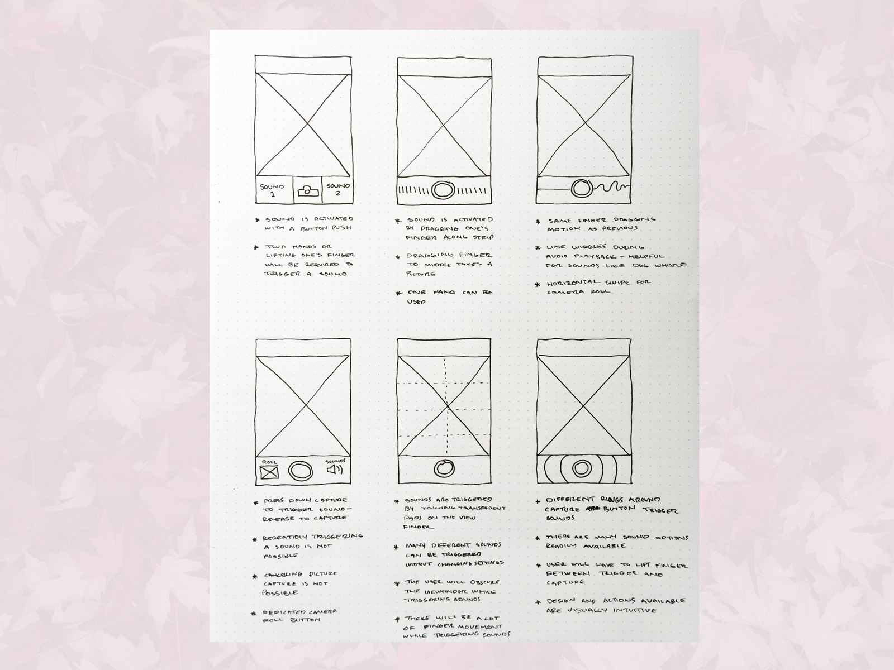
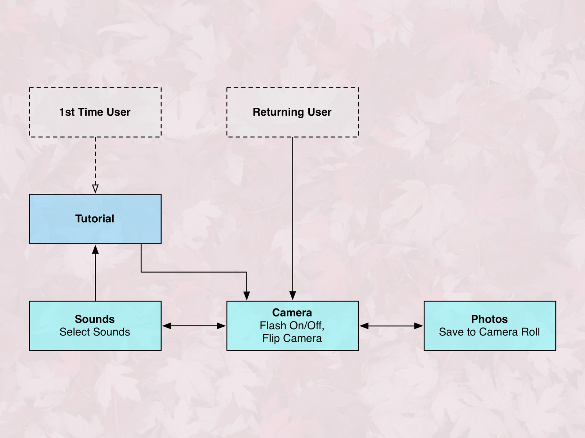
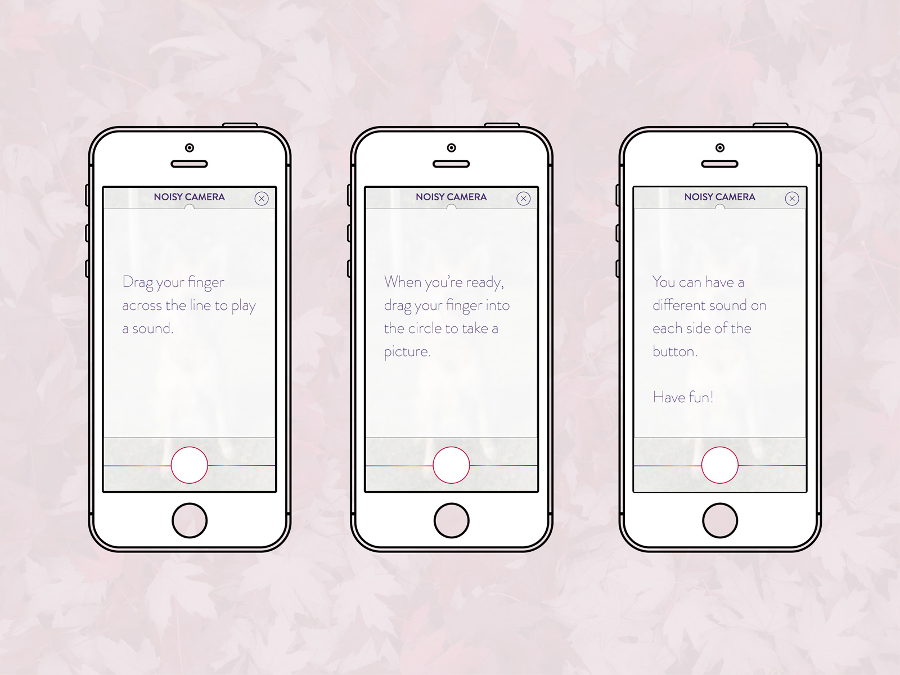
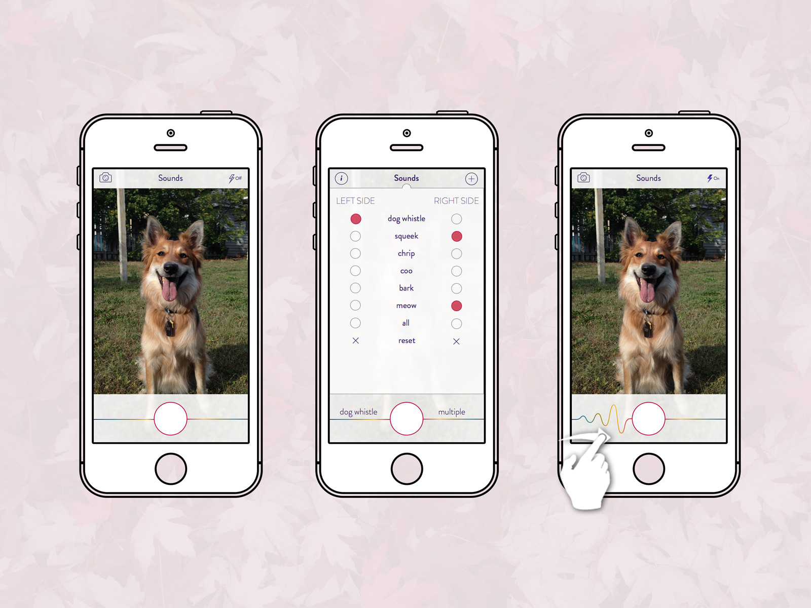

Project:
I thought it would be fun to design a camera that made some noise before snapping a picture, in hopes of having a more attentive subject. I focused on designing an interface that allows the user to trigger a sound as many times as necessary then quickly transition to taking a picture.
I ultimately settled on a sound bar along either side of the capture button, allowing the user to drag their finger back and forth until they are ready to take a picture. When the moment arrives, they can drag their finger to the capture button to take the shot. This enables the user to trigger and capture with a single finger, using a gesture that does not require multiple taps.
Tools used:
- Omnigraffle
- Sketch
Camera UI:

Interactions:
  